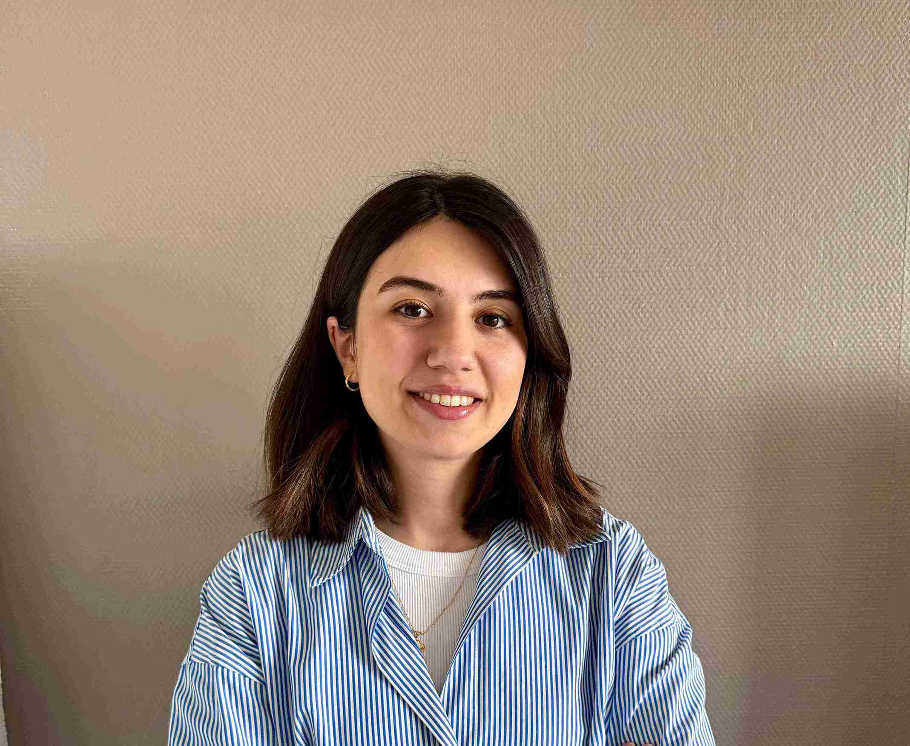

ABOUT ME
Quality Assurance Analyst / Data Analyst avec 2+ ans d'expérience qui assure à préparation de scénarios de test manuels et automatisés conçus et créé des cas de test automatisés en utilisant Java, Selenium WebDriver.
Capable à la fois de travailler en équipe et d'évoluer en autonomie, gestion efficace des projets et gestion du temps en fonction des délais.